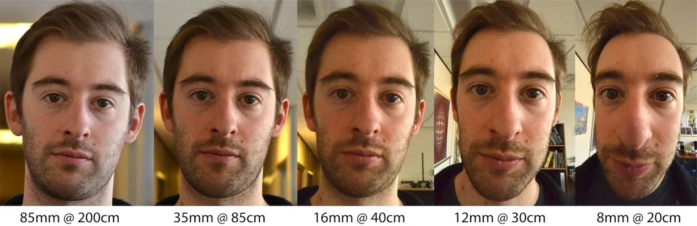
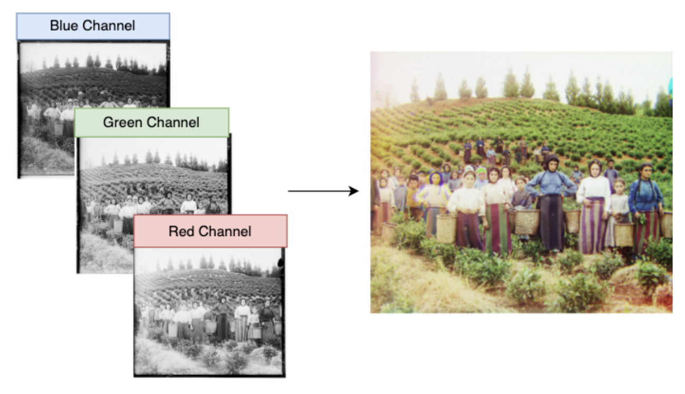
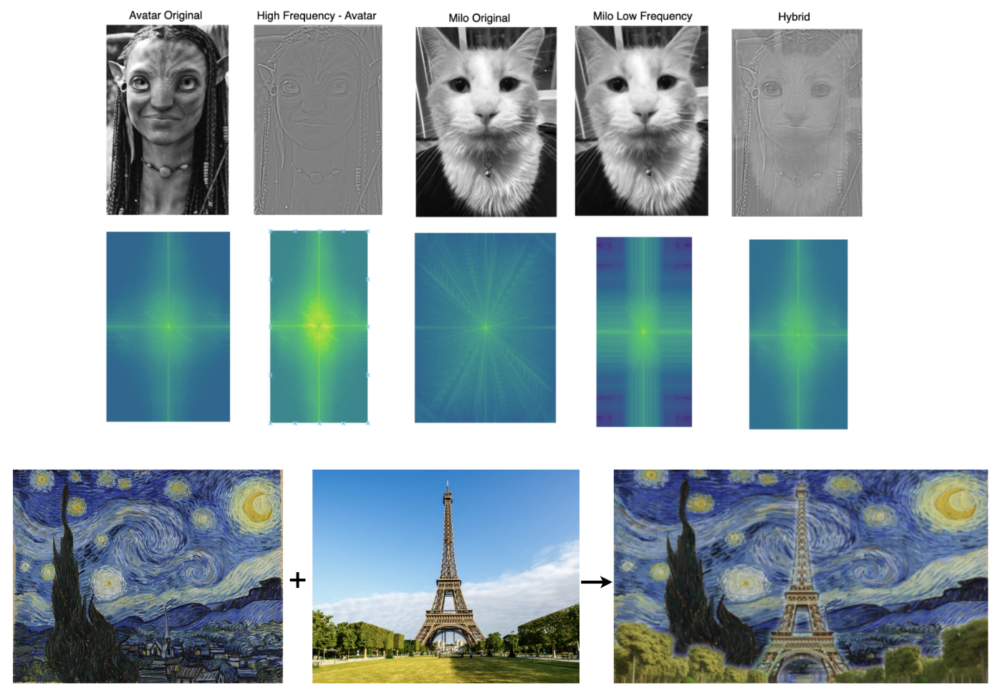
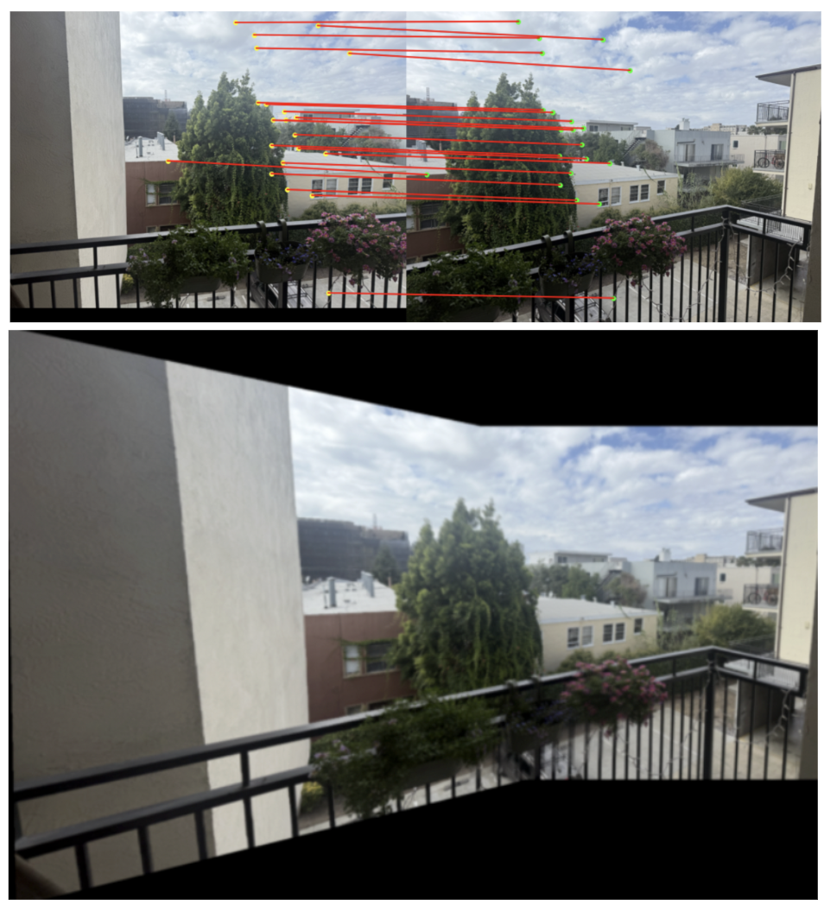
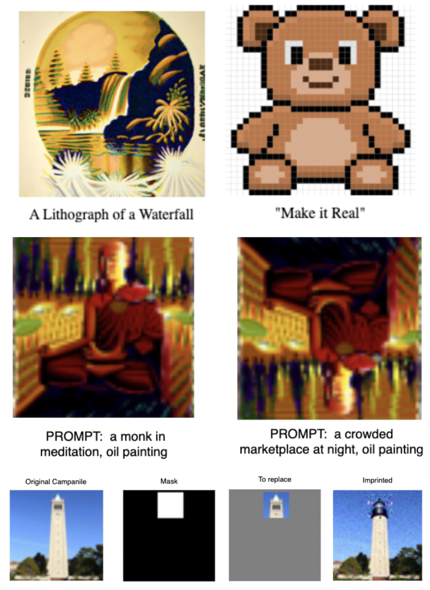

Welcome to Tvisha's CS180 Portfolio!
This portfolio contains my CS180 projects from Fall 2025!
Project 0
Becoming Friends with Your Camera

Explore the relationship between perspective, focal length, and the center of projection through portraits, urban scenes, and dolly zoom.
Project 1
Colorizing the Prokudin-Gorskii Photo Collection

Align RGB channels of digitized images to reconstruct historical color photographs.
Project 2
Fun with Filters and Frequencies!

Image filtering, hybrid images, frequency-domain analysis, and Multi-Resolution blending with Guassian and Laplacian stacks.
Project 3
(Auto)stitching and Photo Mosaics

Manual image warping and mosaicing using recovered homographies and image blending. Automatic image stitching with Harris corner detection, feature matching, RANSAC-based homography estimation, and mosaic construction.
Project 4
Neural Radiance Field!

Calibrated a real camera and captured multi-view images of a physical object. Estimated camera intrinsics and poses using ArUco marker detection, undistorted and organized the dataset for 3D reconstruction, and trained a Neural Radiance Field (NeRF) to represent the object's 3D geometry and appearance.
Project 5
Fun with Diffusion!

Diffusion-based generative modeling with classifier-free guidance (CFG) for text-to-image generation, image-to-image translation, and image editing (hand-drawn images, web images, and visual anagrams). Then implementing flow matching from scratch using denoising UNet and time-conditioned models for iterative image synthesis.